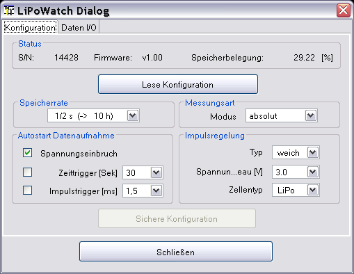
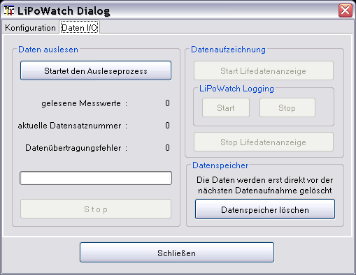
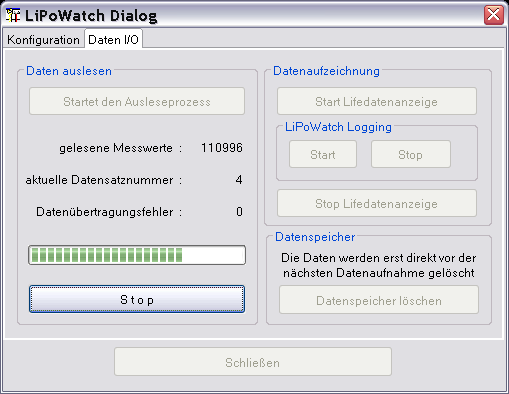

Der LiPoWatch Gerätedialog dient zur Visualisierung der LiPoWatch "Einstellungen" und deren Konfiguration. Über den letzten Dialogtabulator "Daten I/O" können die im Gerät gespeicherten Daten abgeholt und dann angezeigt werden.
Viele Felder sind mit Hilfetexten hinterlegt und sollten diese Beschreibung für den weiteren Gebrauch weitestgehend überflüssig machen. Die Texte werden durch den darüber gehaltenen Mauszeiger sichtbar.
Die aktuelle Dialogimplementierung entspricht dem LiPoWatch Firmware Stand 1.0.
Nachdem der serielle über den Geräteauswahldialog eingestellt ist und der Eingabedialog aufgerufen ist kann durch drücken von „Lese Konfiguration“ die aktuelle LiPoWatch Konfiguration ausgelesen werden. Das Resultat ist beispielhaft in Bild 1 zu sehen.

Werden Einstellungen verändert wird „Sichere Konfiguration“ aktiv. Durch drücken werden die gewählten Einstellungen in das LiPoWatch geschrieben.
Hinweis : Es ist sinnvoll vor der Änderung einer Einstellung erst einmal die aktuelle Konfiguration auszulesen. Sonst wundert man sich, dass andere Einstellungen auch verändert wurden.
Im initialen Zustand sind alle Knöpfe aktiv, die ein Einlesen von Daten auslösen. Die Datenliveanzeige und das Fernauslösen der Datenaufzeichnung im Gerät sind zur Zeit noch nicht implementiert!

Nach drücken von „Start Daten auslesen“ werden die im Gerät gespeicherten Daten ausgelesen.

Am Ende der Datenübertragung werden die Messdaten aufbereitet und angezeigt. Der Dialog ist dann wieder im initialen Zustand, nur der Fortschrittsbalken ist gefüllt und die Anzahl der ausgelesenen Messdaten wird angezeigt.